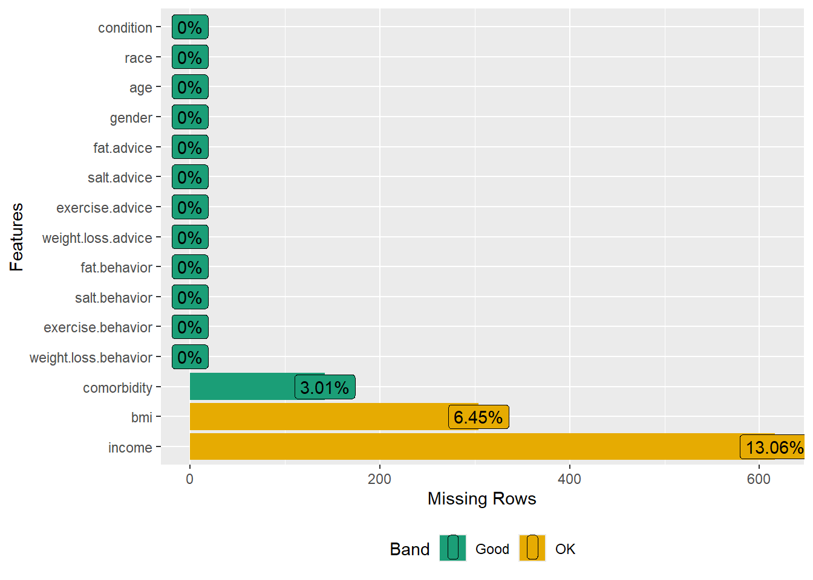

Exercise (M)
You can download all of the related files in a zip file missingdataEx.zip from Github folder, or just by clicking this link directly.
- Navigate to the GitHub folder (above link) where the ZIP file is located.
- Click on the file name (above zip file) to open its preview window.
- Click on the Download button to download the file. If you can’t see the Download button, click on “Download Raw File” link that should appear on the page.
Problem Statement
We will use the article by Williams AR, Wilson-Genderson M, Thomson MD. (2021)
We will reproduce some results from the article. The authors used NHANES 2015-16 and 2017-18 datasets to create their analytic dataset. The combined dataset contains 19,225 subjects with 20 relevant variables for this exercise:
Survey information
- id: Respondent sequence number
- survey.weight: Full sample 4 year interview weight
- psu: Masked pseudo PSU
- strata: Masked pseudo strata (strata is nested within PSU)
4 Outcome variables
- weight.loss.behavior: doing lifestyle behavior changes - controlling or losing weight
- exercise.behavior: doing lifestyle behavior changes - increasing exercise
- salt.behavior: doing lifestyle behavior changes - reducing salt in diet
- fat.behavior: doing lifestyle behavior changes - reducing fat in diet
4 predictors (i.e., exposure variables)
- weight.loss.advice: told by a doctor or health professional - to control/lose weight
- exercise.advice: told by a doctor or health professional - to exercise
- salt.advice: told by a doctor or health professional - to reduce salt in diet
- fat.advice: told by a doctor or health professional - to reduce fat/calories
Confounders and other variables
- gender: Gender
- age: Age in years at screening
- income: The ratio of family income to federal poverty level
- race: Race/Ethnicity
- bmi: Body Mass Index in kg/m\(^2\)
- comorbidity: Comorbidity index
- DIQ010: Self-report to have been informed by a provider to have diabetes
- BPQ020: Self-report to have been informed by a provider to have hypertension
Question 1: Analytic dataset
1(a) Importing dataset
1(b) Subsetting according to eligibility
Create a dataset with missing values in outcomes, predictors, and confounders. As shown in Figure 1, the sample size should be 4,746.
1(c) Dataset with missing values only in confounders
Create a dataset with missing values in only in confounders. There should not be any missing values in the outcomes or predictors. As shown in Figure 1, the sample size should be 4,716.
- Hint: there are four outcome variables and four predictors in this paper. Read the “Self-reported behavior change and receipt of advice” paragraph.
Show the code
dat <- dat.with.miss
# Drop missing or don't know outcomes
dat <- dat[complete.cases(dat$weight.loss.behavior),]
dat <- dat[complete.cases(dat$exercise.behavior),]
dat <- dat[complete.cases(dat$salt.behavior),]
dat <- dat[complete.cases(dat$fat.behavior),]
# Drop missing or don't know predictors
dat <- dat[complete.cases(dat$weight.loss.advice),]
dat <- dat[complete.cases(dat$exercise.advice),]
dat <- dat[complete.cases(dat$salt.advice),]
dat <- dat[complete.cases(dat$fat.advice),]
# Dataset without missing in outcomes and predictors but missing in confounders
dat.with.miss2 <- dat
nrow(dat.with.miss2) # N = 4,716
#> [1] 47161(d) Reproduce Table 1
Create the first column of Table 1 of the article.
Hint 1: The authors reported unweighted frequencies, and thus, survey features should not be utilized to answer this question. Use
tableonepackage.Hint 2: You may need to generate the
Conditionvariable.Hint 3:
ageandcomorbidityare numerical variables.tableonepackage gives mean (SD) for numerical variables by default. For this exercise, instead of reporting the frequency, you could report the mean (SD) forageandcomorbidity.
Show the code
dat <- dat.with.miss2
# Create the condition variable
dat$condition <- NA
dat$condition[dat$BPQ020 == "Yes"] <- "Hypertension Only"
dat$condition[dat$DIQ010 == "Yes"] <- "Diabetes Only"
dat$condition[dat$BPQ020 == "Yes" & dat$DIQ010 == "Yes"] <- "Both"
dat$condition <- factor(dat$condition, levels=c("Hypertension Only", "Diabetes Only",
"Both"))
table(dat$condition, useNA = "always")
#>
#> Hypertension Only Diabetes Only Both <NA>
#> 3004 533 1179 0Show the code
# First column of Table 1
vars <- c("gender", "age", "income", "race", "bmi", "condition", "comorbidity")
tab1 <- CreateTableOne(vars = vars, data = dat, includeNA = F)
print(tab1, format = "f")
#>
#> Overall
#> n 4716
#> gender = Male 2332
#> age (mean (SD)) 59.94 (14.96)
#> income
#> <100% 881
#> 100-199% 1193
#> 200-299% 672
#> 300-399% 424
#> 400+% 930
#> race
#> Hispanic 1161
#> Non-Hispanic white 1630
#> Non-Hispanic black 1239
#> Others 686
#> bmi
#> Reference 753
#> Overweight 1372
#> Obese 2287
#> condition
#> Hypertension Only 3004
#> Diabetes Only 533
#> Both 1179
#> comorbidity (mean (SD)) 1.29 (1.45)Question 2: Dealing with missing values in confoudners [100% grade]
2(a) Check missingness using a plot
In the dataset created in 1(c), use a plot to check missingness. In the plot, include only the outcome variables, predictors, and confounders.
- Hint 1: There are four outcome variables and four predictor variables used in the study.
- Hint 2: The authors considered the following confounders: gender, age, income, race, bmi, condition, and comorbidity.
Show the code
# Create the condition variable in the analytic dataset
dat.with.miss2$condition[dat.with.miss2$BPQ020 == "Yes"] <- "Hypertension Only"
dat.with.miss2$condition[dat.with.miss2$DIQ010 == "Yes"] <- "Diabetes Only"
dat.with.miss2$condition[dat.with.miss2$BPQ020 == "Yes" &
dat.with.miss2$DIQ010 == "Yes"] <- "Both"
dat.with.miss2$condition <- factor(dat.with.miss2$condition,
levels=c("Hypertension Only", "Diabetes Only", "Both"))
# Variables of interest
vars <- c(
# Outcome
"weight.loss.behavior", "exercise.behavior", "salt.behavior", "fat.behavior",
#Predictors
"weight.loss.advice", "exercise.advice", "salt.advice", "fat.advice",
# Confounders
"gender", "age", "income", "race", "bmi", "condition", "comorbidity")
# Plot missing values using DataExplorer
plot_missing(dat.with.miss2[,vars])
2(b) Reproduce Table 3: Multiple imputation
Perform multiple imputations to deal with missing values only in confounders. Use the dataset created in Dataset with missing values only in confounders (dat.with.miss2). Consider 5 imputed datasets, 5 iterations, and fit the design-adjusted logistic regression in all of the 5 imputed datasets. Obtain the pooled adjusted odds ratio with the 95% confidence intervals. In this case, consider only one outcome and one predictor that are related to lose weights, i.e., create only the first column of Table 3.
- Hint 1: Setup the data such that the variables are of appropriate types.
lapplyfunction could be helpful. - Hint 2: Relevel the confounders as shown in Table 3.
- Hint 3: Use the strata variable as an auxiliary variable in the imputation model, but not the survey weight or PSU variable.
- Hint 4: Consider predictive mean matching method for bmi and comorbidity variable in the imputation model.
- Hint 5: Set your seed to 123.
- Hint 6: Remove any subject ID variable from the imputation model, if created in an intermediate step.
- Hint 7: The point and interval estimates could be slightly different than shown in Table 3. But they should very close.
- Hint 8: Remember to keep count of the ineligible subjects from the full data, and consider adding them back in the imputed datasets (so that all the weight, strata and cluster information are available in the design).
Show the code
## Setup the data such that the variables are of appropriate types
factor.names <- c("weight.loss.behavior", "exercise.behavior", "salt.behavior",
"fat.behavior", "weight.loss.advice", "exercise.advice",
"salt.advice", "fat.advice", "gender", "income", "race", "bmi",
"condition")
# your codes
## Change the reference categories
# your codes
## Imputation model set up
# your codes
## Regression analysis
# your codes
## Pooled estimates
# your codesQuestion 3: Dealing with missing values in outcome, predictor, and confoudners [optional]
Perform multiple imputations to deal with missing values only in outcome, predictor, confounders. Use the Multiple Imputation then deletion (MID) approach. Use the dataset created in Subsetting according to eligibility (dat.with.miss). Consider 5 imputed datasets, 5 iterations, and fit the design-adjusted logistic regression in all of the 5 imputed datasets. Obtain the pooled adjusted odds ratio with the 95% confidence intervals. In this case, consider only one outcome and one predictor that are related to reduce fat/calories, i.e., create only the fourth column of Table 3.
- Hint 1: Setup the data such that the variables are of appropriate types.
- Hint 2: Relevel the confounders as shown in Table 3.
- Hint 3: Use the strata variable as an auxiliary variable in the imputation model, but not the survey weight or PSU variable.
- Hint 4: Include all 4 outcomes and 4 predictors in your imputation model.
- Hint 5: Consider predictive mean matching method for bmi and comorbidity variable in the imputation model.
- Hint 6: Set your seed to 123.
- Hint 7: Remove any subject ID variable from the imputation model, if created in an intermediate step.
- Hint 8: The point and interval estimates could be slightly different than shown in Table 3. But they should very close.
- Hint 9: Remember to keep count of the ineligible subjects from the full data, and consider adding them back in the imputed datasets (so that all the weight, strata and cluster information are available in the design).